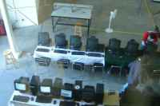
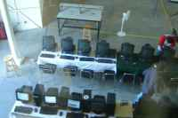
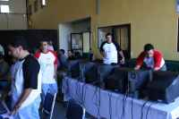
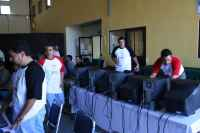
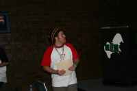
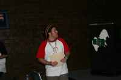
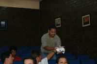
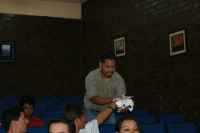
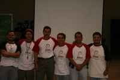
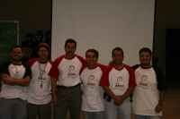

Día Debian en la Comarca Lagunera
Por guivaloz, 2006-08-09 23:00

Agenda:
- Festival de instalación (Gulag) Diapositivas
- Gpg (Carlos Rojas Muñoz crojas) Diapositivas
- Xinerama (Cesar Barrera Balderrama kab) Diapositivas
- Comida (Oswaldo Aguilar)
- Descubriendo el camino libre (Cesar Barrera Balderrama kab) Diapositivas
Conociendo a fondo el proyecto Debian (David Moreno Garza damog)- Debianización (Alejandro Bárcena Campos m77) Diapositivas
- Fiesta de firmado de llaves (Gulag)
- Grupo de usuarios de GNU/Linux de la Laguna BoF (Gulag)
Muchas gracias a nuestros patrocinadores:


Muchas gracias a todos los que asistieron.


 
 


 
 


 
 


 
 


 
